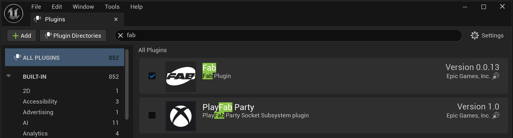

🛒 Using Fab Marketplace Assets
One of Unreal Engine's greatest strengths is its vast ecosystem of pre-made assets. From character models and environments to sound effects and complete game systems, marketplace assets can dramatically accelerate your development. As of October 2024, Epic's Fab is the single storefront for that ecosystem, replacing the old Unreal Engine Marketplace. This bonus lesson covers finding, acquiring, and effectively integrating third-party assets into your projects through Fab.
🎯 Learning Objectives
By the end of this lesson, you will be able to:
- Navigate Fab and find quality assets
- Add purchased assets to your projects
- Migrate assets between projects
- Organize and manage large asset packs
- Integrate Fab content into your levels
- Troubleshoot common asset issues
Estimated Time: 45-60 minutes
Prerequisites: Basic Unreal Engine navigation (Module 1)
In This Lesson
Finding Assets
Before you can use marketplace assets, you need to know where to find them. There are several sources for Unreal Engine assets, each with its own strengths.
Fab: Epic's Unified Marketplace
Fab (fab.com) is Epic's content marketplace, launched in October 2024. It replaced the old Unreal Engine Marketplace and consolidated several stores into one library: the former Epic Games / Unreal Engine Marketplace, Quixel Megascans, the Sketchfab store, and the ArtStation Marketplace. It is your primary source for high-quality, verified assets. Access it through:
- Web browser: Visit fab.com, sign in with your Epic Games account, then browse or search
- Inside Unreal: The Fab plugin ships enabled in UE 5.8, adding an in-editor Fab browser you open from the Content Browser to add assets straight into the open project

Figure: The Fab plugin ships enabled in UE 5.8 (Edit · Plugins), giving you in-editor access to Fab. Unlike some newer tools, Fab is a standard shipping plugin, not Experimental.
Asset Categories
| Category | Examples | Use Cases |
|---|---|---|
| Environments | Forests, cities, interiors, landscapes | Level design, backgrounds |
| Characters | Humanoids, creatures, NPCs | Players, enemies, crowds |
| Props | Furniture, weapons, vehicles | World decoration, gameplay items |
| Materials | PBR materials, shaders, textures | Surface appearance |
| Blueprints | Systems, tools, gameplay mechanics | Functionality, AI, UI |
| Audio | Sound effects, music, ambience | Game audio |
| VFX | Particles, explosions, magic | Visual effects |
Free Assets
Epic Games provides many free assets:
- Free Monthly Content: Epic releases free assets each month—claim them to keep forever
- Permanently Free Collection: Filter by price "Free" on Fab
- Sample Projects: Lyra, Valley of the Ancient, City Sample contain reusable assets
- Megascans: Thousands of free photogrammetry assets (3D scans, surfaces, vegetation), now hosted on Fab
Figure: Multiple sources for Unreal Engine assets.
Evaluating Asset Quality
Before purchasing, check these quality indicators:
- Reviews and Ratings: Read user feedback carefully
- Screenshots/Videos: Look for in-engine footage, not just renders
- Technical Details: Polygon counts, texture sizes, LOD support
- UE Version: Ensure compatibility with your engine version
- Documentation: Quality packs include setup guides
- Support: Active seller with update history
⚠️ License Considerations
Always check the license terms:
- Fab assets: Each listing states its license; Fab offers a Standard license and, for some items, Personal vs Professional tiers, so check which applies before you buy
- Third-party sites: Licenses vary—some restrict commercial use
- Sample projects: Usually for learning; check redistribution terms
- Megascans: Free for Unreal Engine projects only
Adding Assets to Your Project
Once you've purchased or claimed assets, you need to add them to your project. The method depends on the asset source.
From Fab (in-editor plugin)
With the Fab plugin enabled, the fastest path is to add assets straight into the open project:
- In the Content Browser, open the Fab browser and sign in with your Epic Games account
- Find an asset you own (or a free one) in your My Library, or buy/claim a new one
- Choose the engine version, then click Add to Project
- Confirm the target project (the open one by default)
- Wait for the download and install
- The assets appear in the Content Browser, ready to use
You can also acquire assets on fab.com in a browser; they land in your My Library and are then available to add from the in-editor Fab plugin.
Figure: The workflow for adding Fab assets to your project.
Complete Projects and Templates
Some Fab listings are entire sample projects or templates rather than single asset packs. For those, download the item from Fab and open it as its own project (from the Epic Games Launcher's Library, or the .uproject on disk) rather than adding it to an existing project.
Megascans through Fab
Quixel Megascans (photogrammetry scans, surfaces, and vegetation) now lives on Fab. Add Megascans the same way as any other Fab asset:
- Open the Fab browser and search for the Megascans surface, prop, or 3D plant you want
- Choose the quality/resolution (affects file size)
- Click Add to Project
- The assets import into your Content Browser, ready to use
⚠️ Legacy: Quixel Bridge
The standalone Quixel Bridge plugin still ships with UE 5.8 (Bridge v2025.0.1) and can still import Megascans you already own, but it is now legacy. Fab is the current, supported path for browsing and acquiring Megascans, so prefer it for new work.
Importing Third-Party Assets
For assets from external sources (FBX, OBJ files):
- In Content Browser, click Import or drag files in
- Configure import settings (scale, materials, etc.)
- Click Import All
- Textures and materials may need manual setup
💡 Pro Tip: Keep a Library Project
For large asset packs, consider a dedicated "library project" where you add big Fab packs, then migrate only what you need into your actual projects. This keeps your working projects lean and organized.
Migrating Assets Between Projects
Migration lets you copy assets from one project to another while preserving all dependencies (materials, textures, Blueprints, etc.).
When to Migrate
- Moving specific assets from a marketplace pack to your project
- Copying content from sample projects
- Sharing assets between your own projects
- Creating a "clean" version with only needed assets
How to Migrate
- Open the source project (with the assets)
- In Content Browser, select the asset(s) to migrate
- Right-click → Asset Actions → Migrate
- Review the dependency list (all connected assets)
- Click OK
- Navigate to your destination project's Content folder
- Click Select Folder
- Assets are copied to the destination
Figure: Migration automatically includes all dependencies.
Migration Tips
- Select the top-level asset: Dependencies are found automatically
- Review the list: Make sure you need everything listed
- Target the Content folder: Always migrate to the root Content folder
- Close destination project: For best results, have only source open
- Check folder structure: Assets keep their original folder hierarchy
⚠️ Important: Target the Right Folder
When selecting the destination, navigate to the project's Content folder specifically—not the project root. The path should end with /YourProject/Content. Migrating to the wrong folder can cause reference issues.
Organizing Asset Packs
Large marketplace packs can contain hundreds of files. Good organization is essential for maintaining a usable project.
Typical Asset Pack Structure
Most marketplace packs follow a structure like this:
Content/ ├── PackName/ │ ├── Blueprints/ │ │ └── BP_InteractiveItem.uasset │ ├── Maps/ │ │ ├── DemoMap.umap │ │ └── OverviewMap.umap │ ├── Materials/ │ │ ├── M_Wood.uasset │ │ └── MI_Wood_Oak.uasset │ ├── Meshes/ │ │ ├── SM_Chair.uasset │ │ └── SM_Table.uasset │ ├── Textures/ │ │ ├── T_Wood_D.uasset │ │ ├── T_Wood_N.uasset │ │ └── T_Wood_ORM.uasset │ └── Documentation/ │ └── ReadMe.pdf
Organization Strategies
| Strategy | When to Use | Pros/Cons |
|---|---|---|
| Keep Original Structure | Using entire pack as-is | Easy updates, may clutter browser |
| Migrate Selected Assets | Using only some assets | Smaller project, more work |
| Create MarketplaceAssets Folder | Multiple packs | Clear separation, easy to find |
| Reorganize by Usage | Heavy customization | Best workflow, breaks updates |
Using Collections
Collections let you organize assets without moving files:
- In Content Browser, right-click an asset
- Select Add to Collection
- Create a new collection or add to existing
- Access collections from the left panel
Collections are like playlists—the same asset can be in multiple collections without duplication.
Filtering the Content Browser
Use filters to find assets quickly:
- Type Filter: Click Filters → Select asset types (Static Mesh, Material, etc.)
- Search: Type in the search bar to filter by name
- View Options: Adjust thumbnail size, list view, show/hide folders
- Recent: Content Browser → View → Recent Assets
✅ Best Practice: Demo Maps
Most marketplace packs include demo maps showing how assets are intended to be used. Always explore these first! They demonstrate proper material setup, lighting, and placement. You can copy setups directly from demo maps into your own levels.
Using Assets in Your Levels
Now for the fun part—actually using the assets in your game!
Placing Static Meshes
- Find the mesh in Content Browser
- Drag it into the viewport
- Use transform tools to position (W), rotate (E), scale (R)
- Adjust in Details panel for precise values
Applying Materials
If a mesh needs a different material:
- Select the mesh in the viewport
- In Details, find Materials section
- Click the dropdown for any material slot
- Search or browse for the new material
- Or drag a material from Content Browser onto the mesh
Using Material Instances
Many packs include Material Instances for customization:
- Find Material Instances (usually prefixed MI_)
- Double-click to open
- Adjust exposed parameters (colors, values, textures)
- Create your own instances: Right-click base material → Create Material Instance
Using Blueprint Actors
Some packs include interactive Blueprint actors:
- Find Blueprints (usually prefixed BP_)
- Drag into level like any other asset
- Select and check Details panel for configurable options
- Read the pack's documentation for setup instructions
Working with Character Assets
For character/skeletal mesh assets:
- Check if animations are included
- Look for Animation Blueprints (ABP_) for animated characters
- May need to set up in your Character Blueprint
- Retargeting may be needed for custom animations
Figure: The workflow for placing and customizing assets.
Combining Assets from Different Packs
You can mix assets from multiple sources:
- Style Matching: Choose packs with similar art styles
- Scale Consistency: Check that assets use the same scale
- Material Compatibility: May need to adjust materials for consistency
- Lighting: Unified lighting helps blend different assets
Troubleshooting Common Issues
Marketplace assets don't always work perfectly out of the box. Here are common issues and solutions.
Common Problems and Solutions
| Problem | Cause | Solution |
|---|---|---|
| Assets show pink/magenta | Missing materials or textures | Reimport, check dependencies migrated |
| Wrong scale (too big/small) | Different unit conventions | Scale in Details or reimport with different scale |
| Blueprints have errors | Missing plugin or version mismatch | Enable required plugins, check UE version |
| Assets not appearing in browser | Wrong folder or filter active | Clear filters, check correct project |
| Collision issues | No collision setup or wrong type | Generate collision in Static Mesh editor |
| Performance problems | High poly counts, no LODs | Use LODs, enable Nanite if compatible |
| Materials look different | Lighting or rendering differences | Check project rendering settings match pack |
Missing Reference Errors
If you see "Can't find file" or broken references:
- Open Window → Developer Tools → Asset Audit
- Or right-click problematic asset → Reference Viewer
- Identify what's missing
- Re-migrate the missing dependencies
- Or use Fix Up Redirectors if assets were moved
Version Compatibility
When assets are made for a different UE version:
- Newer to Older: May not work; features may be missing
- Older to Newer: Usually works; may need material updates
- Check Documentation: Pack may have migration notes
- Contact Seller: They may provide updated versions
Generating Collision
If meshes have no collision:
- Double-click the Static Mesh to open editor
- Go to Collision menu
- Choose collision type:
- Add Box Simplified Collision: Fast, simple
- Add Convex Collision: Better fit
- Auto Convex Collision: Complex shapes
- Use Complex as Simple: Exact mesh shape (expensive)
- Save the mesh
💡 Check the Documentation
Quality marketplace packs include documentation (often a PDF or text file in the pack folder). This usually covers setup instructions, known issues, and tips. Always read it before troubleshooting!
Hands-On: Adding and Using Marketplace Assets
Let's practice the complete workflow of adding marketplace assets to a project and using them in a level.
🎯 Exercise Goal
Claim a free marketplace asset, add it to your project, explore its contents, and place assets in your level.
Part 1: Claim a Free Asset
- Open Fab (in a browser at fab.com, or from the Content Browser's Fab plugin)
- Filter by price "Free", or browse the free monthly picks
- Find an environment or prop pack you like
- Click to acquire it for free (adds it to your My Library)
Suggestion: Look for packs like "Souls-like Interior," "Modular Building Set," or any current free monthly content.
Part 2: Add to Your Project
- In the in-editor Fab browser, open My Library
- Find the pack you just acquired
- Choose your engine version and click Add to Project
- Confirm your project (the open one, or pick another)
- Wait for the download and install
Part 3: Explore the Asset Pack
- Open your project in Unreal Editor
- In Content Browser, find the new folder for the pack
- Explore the folder structure:
- Look for Maps folder—open demo maps
- Check Meshes for 3D models
- Browse Materials for material setups
- Look for Documentation or ReadMe files
- Open a demo map if available—study how assets are used
Part 4: Place Assets in Your Level
- Open or create a level to work in
- Find a static mesh you want to use
- Drag it from Content Browser into the viewport
- Position it using transform tools (W, E, R)
- Add more assets to build a small scene
- Try different materials on the same mesh
Part 5: Customize an Asset
- Select a placed mesh in the viewport
- In Details panel, find Materials
- Try swapping to a different material from the pack
- If the pack has Material Instances:
- Create a copy (right-click → Duplicate)
- Open and adjust parameters
- Apply your customized instance to the mesh
Part 6: Migration Practice (Optional)
If you want to practice migration:
- Create a new empty project
- In your original project, select a few assets
- Right-click → Asset Actions → Migrate
- Navigate to the new project's Content folder
- Complete the migration
- Open the new project and verify assets work
✅ Exercise Complete!
You've successfully:
- Claimed a free marketplace asset
- Added it to your project
- Explored the pack structure
- Placed and customized assets in your level
You now have the skills to leverage the vast library of marketplace content!
Bonus Challenges
- Megascans: Add a few Megascans surfaces or 3D plants from Fab and build a small natural scene
- Mix Packs: Combine assets from two different packs in one scene
- Create Variants: Make 3+ material instance variants of one material
- Build a Room: Use modular pieces to construct a complete interior
Summary
Marketplace assets are a powerful way to accelerate your game development. Whether you're prototyping, learning, or building a commercial project, knowing how to find, add, and use third-party content is an essential skill.
Key Concepts
Finding Assets: Fab (fab.com), launched in October 2024, is your primary source for verified UE assets; it replaced the Unreal Engine Marketplace and folded in Quixel Megascans, the Sketchfab store, and ArtStation. Always check reviews, compatibility, and licenses before buying.
Adding to Projects: Use the in-editor Fab plugin (enabled by default in UE 5.8) to add assets from your My Library straight into the open project; they appear in the Content Browser after install. Megascans come through Fab too.
Migration: Use the Migrate feature to copy specific assets between projects. Migration automatically includes all dependencies. Always target the destination project's Content folder.
Organization: Keep asset packs organized using folders and collections. Explore demo maps to understand intended usage. Use Content Browser filters to find assets quickly.
Using Assets: Drag assets from Content Browser to place in levels. Customize with transform tools and material swaps. Read pack documentation for setup instructions and tips.
Quick Reference
| Task | Method |
|---|---|
| Find assets | Fab (fab.com), sample projects |
| Add to project | In-editor Fab plugin → My Library → Add to Project |
| Migrate assets | Right-click → Asset Actions → Migrate |
| Place in level | Drag from Content Browser to viewport |
| Change material | Details → Materials → Select new material |
| Generate collision | Static Mesh Editor → Collision menu |
Best Practices
- Check compatibility: Verify UE version before purchasing
- Read reviews: Learn from others' experiences
- Explore demos: Study how assets are meant to be used
- Read documentation: Most issues are covered in ReadMe files
- Start with free: Practice with free assets before buying
- Migrate selectively: Only bring what you need to keep projects lean
- Back up before adding: Large packs can be hard to remove
- Match art styles: Choose packs that work together visually
Figure: The complete workflow from finding assets to using them in your game.
Knowledge Check
Question 1
Where do you find purchased marketplace assets after claiming them?
Correct answer: B — Assets you buy or claim on Fab appear in your My Library. From there, add them to a project with the in-editor Fab plugin, or download them from fab.com.
Question 2
When migrating assets, what folder should you select as the destination?
Correct answer: B — Always migrate to the destination project's Content folder. Migrating to the wrong location can cause reference issues and missing assets.
Question 3
What does migration automatically include when you select an asset?
Correct answer: B — Migration automatically finds and includes all dependencies (materials, textures, referenced Blueprints, etc.) needed for the asset to work properly.
Question 4
What does it usually mean when assets appear pink/magenta in your level?
Correct answer: B — Pink/magenta is Unreal's default color for missing materials or textures. This usually means dependencies weren't migrated or paths are broken.
Question 5
What source provides free photogrammetry assets for Unreal Engine users?
Correct answer: C — Quixel Megascans provides thousands of free photogrammetry assets (3D scans, surfaces, vegetation). Since 2024 it lives on Fab, where you add it like any other asset.
Question 6
What should you always check before purchasing a marketplace asset?
Correct answer: B — Always check user reviews, UE version compatibility, and license terms before purchasing. This helps avoid compatibility issues and ensures the asset meets your needs.
Question 7
Where should you look first when learning how to use a marketplace asset pack?
Correct answer: B — Quality marketplace packs include demo maps showing intended usage and documentation covering setup instructions. These are the most reliable sources for learning to use the specific pack.